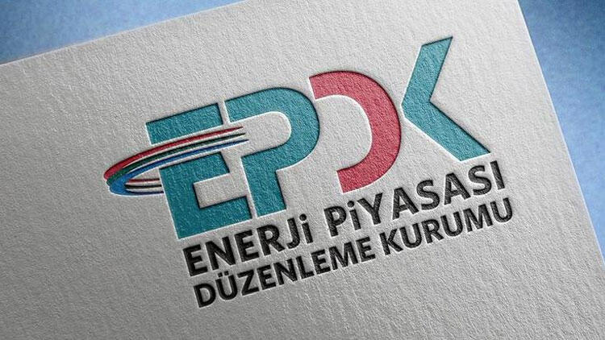
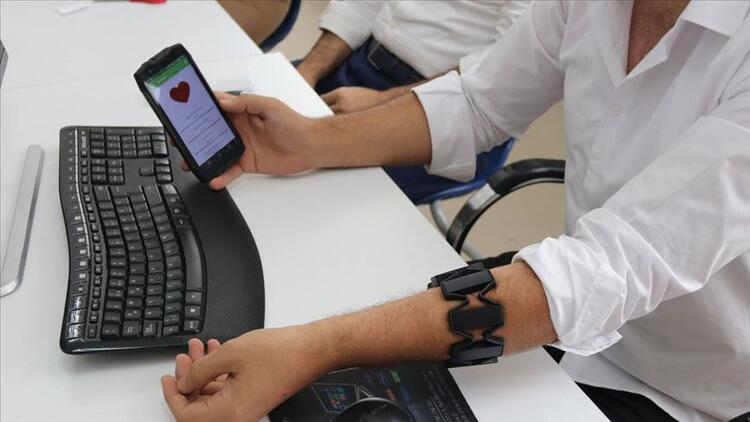
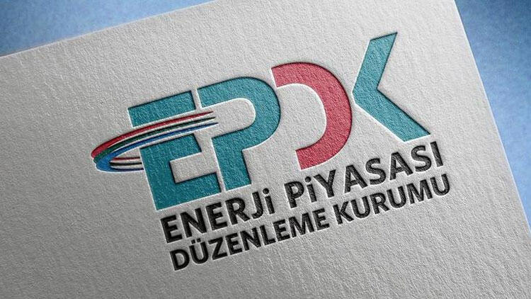
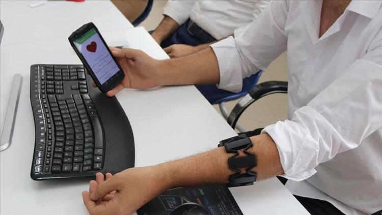
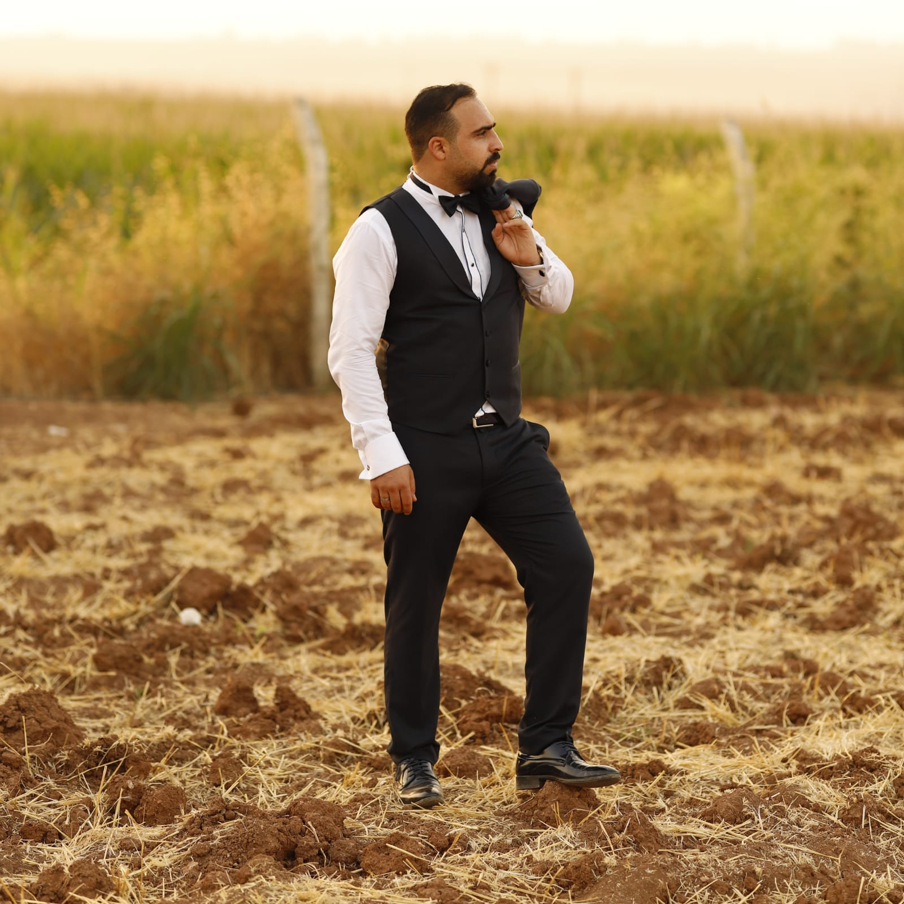

11 EKİM 2020 ÇARŞAMBA
HABER PORTALI
 Enerji Piyasası Düzenleme Kurumu (EPDK), Elektrik Dağıtım Hizmetleri Derneği (ELDER) ve ODTÜ TEKNOKENT iş birliğinde başlatılan "Enerjim Sensin Hızlandırma Programı" kapsamında elektrik dağıtım sektörüne yönelik yenilikçi iş fikirlerine 300 bin lira ödül verilecek. ELDER'den yahaberin devamı için tıklayınız...
10 EKİM 2020 ÇARŞAMBA
 Karadeniz Teknik Üniversitesi (KTÜ) ile Trabzon Teknoloji Geliştirme Bölgesi'nde Ar-Ge çalışmaları yürüten Atigen-Cell Hücre ve Doku Merkezi arasında iş birliği protokolü imzalandı.haberin devamı için tıklayınız...
Karadeniz Teknik Üniversitesi (KTÜ) ile Trabzon Teknoloji Geliştirme Bölgesi'nde Ar-Ge çalışmaları yürüten Atigen-Cell Hücre ve Doku Merkezi arasında iş birliği protokolü imzalandı.haberin devamı için tıklayınız...
9 EKİM 2020 ÇARŞAMBA
 Diyarbakır Dicle Üniversitesi TEKNOKENT, IOT teknolojisi kullanarak epilepsi hastalarını nöbet öncesi uyaran akıllı bileklik geliştirdi.haberin devamı için tıklayınız...
8 EKİM 2020 ÇARŞAMBA
TÜBİTAK Bireysel Genç Girişim (BiGG) Programı'nın 2020 yılı çağrısı için ön başvurular başladı. İstanbul Teknokent'ten yapılan açıklamaya göre, Boğaziçi Üniversitesi Teknoloji Transfer Ofisi (TTO) ve Sakarya Teknokent iş birliğinde, "TÜBİTAK BİGG 2020" programı için ön başvuru açıldı.haberin devamı için tıklayınız...
7 EKİM 2020 ÇARŞAMBA
ODTÜ Teknokent araştırmacıları, metastaz potansiyeline sahip kanserli hücrelerin milyarlarca kan hücresinin içinden canlı şekilde ayrıştırılıp sayılabilmesi için özgün bir teknoloji geliştirdi.haberin devamı için tıklayınız...
HABER PORTALI
 Enerji Piyasası Düzenleme Kurumu (EPDK), Elektrik Dağıtım Hizmetleri Derneği (ELDER) ve ODTÜ TEKNOKENT iş birliğinde başlatılan "Enerjim Sensin Hızlandırma Programı" kapsamında elektrik dağıtım sektörüne yönelik yenilikçi iş fikirlerine 300 bin lira ödül verilecek. ELDER'den yahaberin devamı için tıklayınız...
10 EKİM 2020 ÇARŞAMBA
Karadeniz Teknik Üniversitesi (KTÜ) ile Trabzon Teknoloji Geliştirme Bölgesi'nde Ar-Ge çalışmaları yürüten Atigen-Cell Hücre ve Doku Merkezi arasında iş birliği protokolü imzalandı.haberin devamı için tıklayınız...
9 EKİM 2020 ÇARŞAMBA
 Diyarbakır Dicle Üniversitesi TEKNOKENT, IOT teknolojisi kullanarak epilepsi hastalarını nöbet öncesi uyaran akıllı bileklik geliştirdi.haberin devamı için tıklayınız...
8 EKİM 2020 ÇARŞAMBA
TÜBİTAK Bireysel Genç Girişim (BiGG) Programı'nın 2020 yılı çağrısı için ön başvurular başladı. İstanbul Teknokent'ten yapılan açıklamaya göre, Boğaziçi Üniversitesi Teknoloji Transfer Ofisi (TTO) ve Sakarya Teknokent iş birliğinde, "TÜBİTAK BİGG 2020" programı için ön başvuru açıldı.haberin devamı için tıklayınız...
7 EKİM 2020 ÇARŞAMBA
ODTÜ Teknokent araştırmacıları, metastaz potansiyeline sahip kanserli hücrelerin milyarlarca kan hücresinin içinden canlı şekilde ayrıştırılıp sayılabilmesi için özgün bir teknoloji geliştirdi.haberin devamı için tıklayınız...
Blog Arşivi
2020
2019
2018
Hakkımda
Mehmet Reşit Daşçi
Profilimin tamamını görüntüle
İletişim
İletişim bilgilerini görüntüle

Bir Adın Kalmalı
Bir adın kalmalı geriye bütün kırılmış şeylerin nihayetinde aynaların ardında sır yalnızlığın peşinde kuvvet evet nihayet bir adın kalmalı geriye bir de o kahreden gurbet Sen say ki ben hiç ağlamadım hiç ateşe tutmadım yüreğimi geceleri, koynuma almadım ihaneti ve say ki bütün şiirler gözlerini bütün şarkılar saçlarını söylemedi hele nihavent hele buselik hiç geçmedi fikrimden ve hiç gitmedi bir topak kan gibi adın içimin nehirlerinden evet yangın evet salaş yalvarmanın korkusunda talan evet kaybetmenin o zehirli buğusu evet nisyan evet kahrolmuş sayfaların arasında adın sokaklar dolusu bir adamın yalnızlığı bu sevda biraz nadan biraz da hıçkırık tadı pencere önü menekşelerinde her akşam Dağlar sonra oynadı yerinden ve hallaçlar attı pamuğu fütursuzca sen say ki yerin dibine geçti geçmeyesi sevdam ve ben seni sevdiğim zaman bu şehre yağmurlar yağdı yani ben seni sevdiğim zaman ayrılık kurşun kadar ağır gülüşün kadar felaketiydi yaşamanın yine de bir adın kalmalı geriye bütün kırılmış şeylerin nihayetinde aynaların ardında sır yalnızlığın peşinde kuvvet evet nihayet bir adın kalmalı geriye bir de o kahreden gurbet beni affet Kaybetmek için erken, sevmek için çok geç (Ahmet Hamdi Tanpınar)
Özledim Seni
Özledim seni… Ayrılık yüreğimi uyuşturuyor karıncalandırıyor nicedir. beynimi uyuşturuyor özlemin… çok sık birlikte olmasak bile benimle olduğunu bilmenin bunca zamandır içimi ısıttığını yeni yeni anlıyorum Yokluğun, hatırladıkça yüreğime saplanan bir sizi olmaktan çıkıp mütemadiyen bir boşluğa Sabahları seni okşayarak başlamaları aksamları her isi bir kenara koyup seninle baş başa konuşmaları…özledim seni… ayrılık yüreğimi uyuşturuyor karıncalandırıyor nicedir. beynimi uyuşturuyor özlemin… çok sık birlikte olmasak bile benimle olduğunu bilmenin bunca zamandır içimi ısıttığını yeni yeni anlıyorum Yokluğun, Hatırladıkça yüreğime saplanan bir sizi olmaktan çıkıp mütemadiyen bir boşluğa Sabahları seni okşayarak başlamaları aksamları her isi bir kenara koyup seninle baş başa konuşmaları özlüyorum; oynaşmalarımızı, yürüyüşlerimizi, sevimli haşarılığını, çocuksu küskünlüğünü… Nasılda serttin başkalarına karşı beni savunurken; ve ne kadar yumuşak bir çift kısık gözle kendini ellerimin okşayışına bırakırken Gitmeni asla istemediğim halde buna mecbur olduğunu görmek ve sana bunları söylemeden "git artık" demek "beni ne kadar çabuk unutursan, o kadar çabuk kavuşacaksın mutluluğa" demek sana nede zor seni görmemek ve belki yıllar sonra karsılaştığımızda bana bir yabancı gibi bakmanı istemek senden… yeni bir sevdayı yasakladığım kalbime söz geçirmek… (Can Yücel)